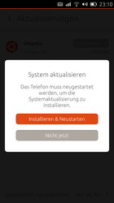

Notfall
Dieser Artikel bezieht sich auf Ubuntu Touch, die Variante von Ubuntu für mobile Geräte mit Touchscreen.
Dieser Artikel gilt für alle Versionen von Ubuntu Touch.
Zum Verständnis dieses Artikels sind folgende Seiten hilfreich:
Es kann immer einmal vorkommen, dass sich das Ubuntu Phone[1] aufhängt, nach einer missglückten Aktualisierung nicht mehr nutzbar oder in einer Bootschleife gefangen ist. Diese Seite soll Hilfestellung geben, um einige der Probleme zu lösen.
Sofern die Schritte in den Wikiartikeln zu Ubuntu Touch sowie speziell in diesem Artikel nicht zum gewünschten Erfolg führen, kann man sich an das Forum wenden.
|  |
| Aktualisierung |
Tastenkombinationen¶
Wenn Ubuntu Touch aus irgendeinem Grund auch nach kurzer Wartezeit nicht mehr reagiert, kann versucht werden, es gewöhnlich neuzustarten, indem man die Power-Taste etwa 3s betätigt und den Neustart auf dem Bildschirm bestätigt. Gelingt dies nicht und hat man keinen Netzwerkzugriff wie ADB oder SSH auf das Telefon, muss man das Telefon hart ausschalten.
Dazu muss man den Ausschalter mindestens 7s gedrückt halten. In bestimmten Situationen kann es nötig sein, den Not-Aus auszulösen, indem man noch länger gedrückt halten muss, damit sich das Gerät ausschaltet.
Hat man ohne Kabel in den Fastboot-Modus gebootet, kann man diesen auch dadurch verlassen, indem man ein Kabel zu einem laufenden PC ansteckt - der Strom-Impuls reicht bereits.
Zurücksetzen¶
Sofern das Telefon via "Systemeinstellungen -> Telefon zurücksetzen" nicht zurückgesetzt werden kann, kann man dies auch über das Bootmenü erreichen. Auch der Starter lässt sich über die "Systemeinstellungen" einzeln zurücksetzen.
Hinweis:
Getestet am Gerät bq Aquaris E4.5.
Telefon ausschalten
Für circa 10 Sekunden Vol+ + gedrückt halten.
loslassen, sobald die LED rot aufleuchtet.
Anschließend drücken, um in den Recovery-Modus zu gelangen.
Vol- drücken und "wipe data/factory reset" auswählen sowie mit Vol+ betätigen.
"Yes--delete all user data" auswählen. Mit Vol- scrollen und mit Vol+ auswählen.
Sobald das Menü vom Recovery-Modus erneut auftaucht, den Punkt "reboot system now" wählen, um das Gerät neu zu starten.
Werksmodus¶
Der Werksmodus ist ein eigenständiger Modus, welcher nicht mit dem Bootmenü sowie den dort enthaltenen Modi Recovery Modus sowie Fastboot zu verwechseln ist. Er bietet zahlreiche hardwarenahe Funktionen. Einen Überblick gibt die Tabelle unten. Um in den Werksmodus zu gelangen sind die folgenden Schritte notwendig:
Das Gerät ausschalten.
Für circa 10 Sekunden Vol- + gedrückt halten. Das Gerät startet in den Werksmodus.
Im Menü wird mittels den Vol+ + Vol- Lautstärketasten navigiert und durch den Einschaltknopf bestätigt. Um eine Menüebene nach oben zu wechseln, die Taste Vol+ ein paar Sekunden gedrückt halten. Es erscheint ein blauer Balken - hier "Back" wählen.
| Werksmodus | |
| Menü | Beschreibung |
| "Full Test" | Alle Systemkomponenten werden getestet. Dieser Vorgang ist zeitintensiv. |
| "Item Test" | Spezifische Hardwarekomponenten des Geräts testen. Je nach Ergebnis "Test Pass" oder "Test Fail" wählen. Die Ergebnisse werden in einem Bericht zusammengefasst. |
| "Test Report" | Auflistung aller bisher durchgeführten Tests. Grün steht für einen bestandenen Test ("Test Pass"), Rot ("Test Fail") für Probleme und Schwarz für nicht durchgeführte Operationen. |
| "Version" | Informationen zu Hard- und Softwareversionen der verschiedenen Komponenten. Ebenfalls werden hier die IMEIs angezeigt. |
| "Reboot" | Neustart. |
| "Power Off" | Gerät ausschalten. |
Not-Aus¶
Wenn im Notfall die Power-Taste mind. 20-30s  gedrückt wird, wird ein Strom-Aus erzwungen.
gedrückt wird, wird ein Strom-Aus erzwungen.
Hinweis:
Unter sehr ungünstigen Umständen muss man über Nacht den Akku leerlaufen lassen, was jedoch mit diesem Not-Aus praktisch nicht mehr nötig ist. Der Akku ist bei den Geräten von bq fest verklebt und die Kontakte mit sehr kleinen Schrauben verschraubt. Das Gehäuse lässt sich problemlos ringsum aufklippen, zuvor müssen lediglich die beiden SIM-Slot-Abdeckungen entfernt werden.
Bootet nicht mehr¶
Sollte das Gerät nach einem Update nicht mehr wie erwartet starten, kann es nötig sein, dass das Betriebssystem erneut aufgespielt werden muss. Der Artikel Ubuntu Touch/flash tool geht im Detail auf dieses Problem ein. Allerdings kann der erste Bootvorgang nach bestimmten Systemaktualisierungen etwas länger dauern, man sollte also 5-15 min Geduld aufbringen und danach zunächst einen Neustart probieren, indem man über den Not-Aus ausschaltet.
Einstellungen finden¶
Ubuntu Touch ist noch recht neu und manche Dinge findet man nicht gleich, weil man sich in den Unterschieden zu Ubuntu noch nicht so gut zurechtfindet. Manchmal macht eine App oder Systemkomponente Probleme und man würde gerne diesen Teil zurücksetzen, ohne gleich alle Daten löschen bzw. das System neu installieren zu müssen.
Oder man möchte wissen, in welcher Datei bestimmte eingegebene Daten gespeichert werden, um sie zu sichern oder in Scripten auszulesen, zu verarbeiten oder automatisch verändern zu lassen. Um die unbekannten Orte und Dateien zu finden, ist unter Ubuntu Touch das bereits von Ubuntu bekannte find vorinstalliert, welches mit dem Terminal[2] aufgerufen werden kann.
Hinweis:
Bei den folgenden Befehlen wird das gesamte Homeverzeichnis mit den darin enthaltenen Apps durchsucht, sofern man nicht unmittelbar zuvor das aktuelle Arbeitsverzeichnis durch z.B. cd verändert hat.
Wenn man alle Ordner und Dateien zu einer ganz bestimmten App sucht, kann man folgende Abfrage verwenden:
find -iname '*APPNAME*'
Man kann
findzum Beispiel auch dazu verwenden, um eine soeben in einer App geänderte Einstellung bis hin zu ihrer Konfigurationsdatei oder ihren Daten zurückzuverfolgen und kann direkt abfragen, welche Dateien sich dadurch innerhalb der letzten Minute geändert haben müssen:find -mmin -1
Sucht man dagegen direkt nach Inhalten von Textdateien, wie einen Eintrag in Konfigurationsdateien einer App oder des Systems, verwendet man grep mit folgenden Optionen:
grep -Iri SUCHWORT
Viele Einstellungen werden jedoch auch in SQLite-Dateien gespeichert, welche man wie hier beschrieben mit
findsuchen sowie entsprechend den Beispielen im Artikel SQLite inhaltlich durchsuchen kann.
Logdateien¶
Zur Behebung von Problemen können die Ausgaben der Logdateien von systemd hilfreich sein. Die Logdateien von Apps findet man im Ordner ~/.cache/upstart/.
Links¶
Ubuntu Touch
 Übersichtsartikel
ÜbersichtsartikelUbuntu Touch/Launchpad - Verbesserungswünsche, Probleme & geplante Lösungen
Terminal - weitere Zugänge zum System
Hacking the bq, Part 2: Factory Mode
- Werksmodus

- Erstellt mit Inyoka
-
 2004 – 2017 ubuntuusers.de • Einige Rechte vorbehalten
2004 – 2017 ubuntuusers.de • Einige Rechte vorbehalten
Lizenz • Kontakt • Datenschutz • Impressum • Serverstatus -
Serverhousing gespendet von